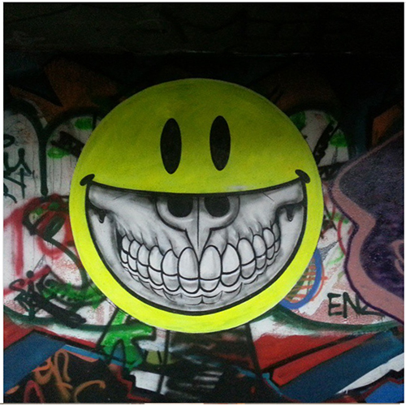
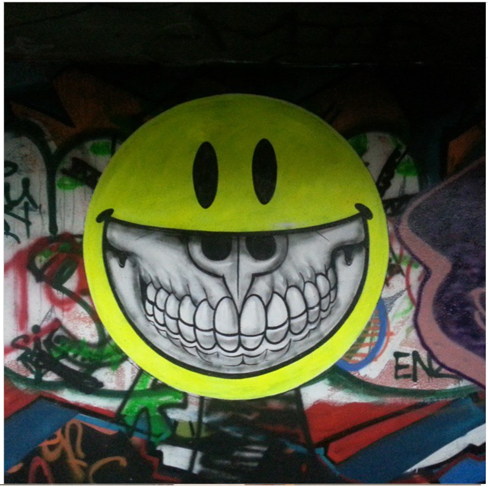
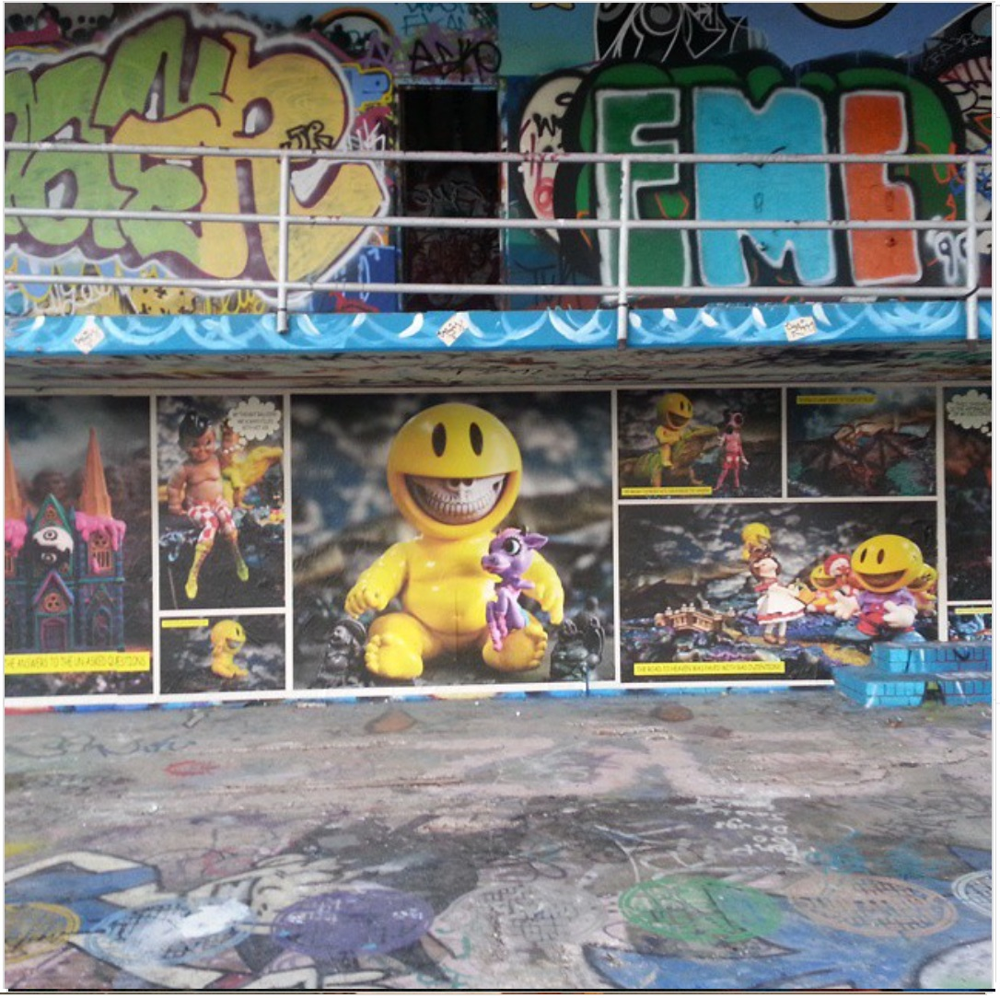
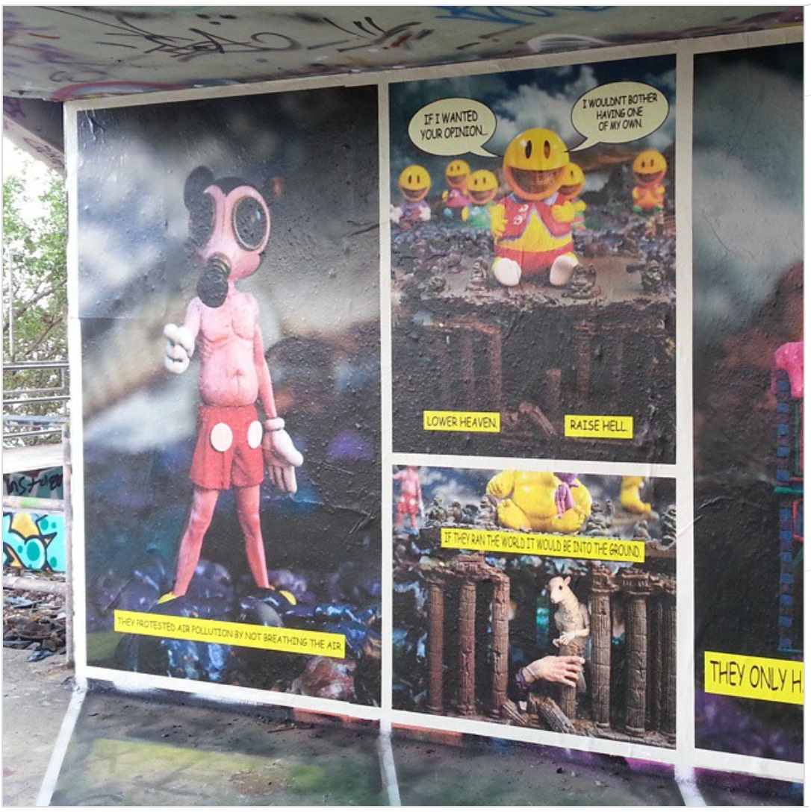

Miami Marine Stadium, 2014
Murals created by Ron English at Miami Marine Stadium for the Art & History Mural Project in support of the site’s preservation.

Work details
Description
Created for the Art & History Mural Project, Ron English’s murals were painted directly on the aging concrete structure of the abandoned Miami Marine Stadium. English joined a roster of major street artists, including Crash, Tristan Eaton, Logan Hicks, The London Police, Reinier Gamboa, and Jose Mertz, transforming both the stadium interior and exterior into a large-scale collaborative installation.
The initiative aimed to raise awareness for the historic stadium’s preservation. Photographs of the murals were later issued as limited-edition prints to support restoration efforts, with related exhibitions presented during Miami Art Week.
Gallery


